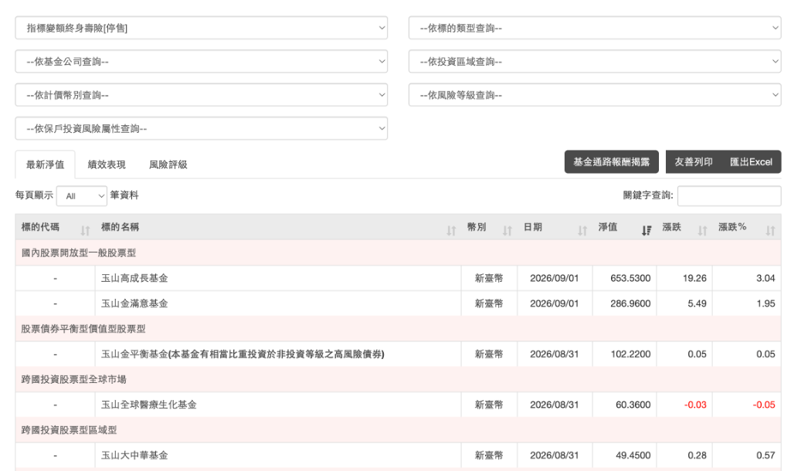
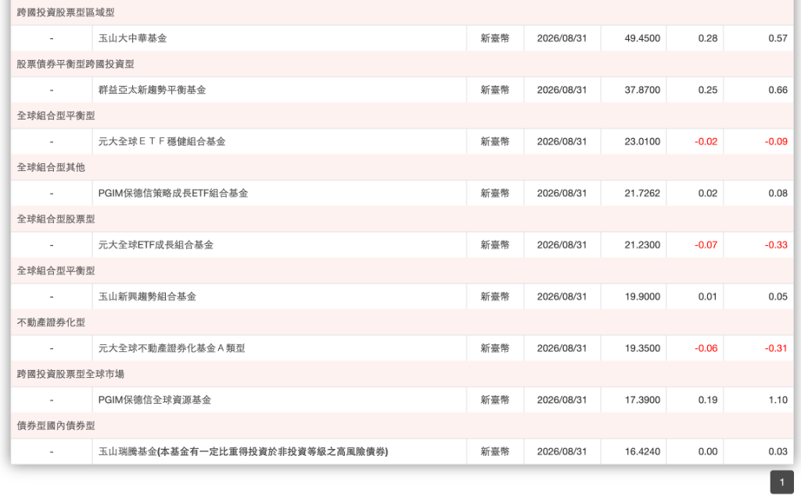

問大師家族辦公室
趙賢彬 董事長保單報告
王執定
顧問 / 創辦人
|
黃芷翊
顧問
2026 年 9 月 11 日
問大師家族辦公室
趙賢彬 董事長專屬報告
趙賢彬 · 竹北置地董事長專屬報告
保德信指標變額終身壽險
（IVL）分析
非分離帳戶 ｜ 固定平準保費 ｜ 保障 ＋ 投資
問大師家族辦公室
趙賢彬 董事長保單報告
保單基本明細
商品名稱
保德信國際人壽終身壽險（指標變額型）
現承接公司
新光人壽（2026 合併）
投保日期
2006 年 10 月 3 日
年繳保費
$258,984 元
繳費年期
20 期（2006 ～ 2025 年）
滿期日期
2026 年 3 月（已滿期）
115年6月解約金
$15,468,196 元
問大師家族辦公室
趙賢彬 董事長保單報告
保單核心運作機制
💡 總保險金額組成
總保險金 =
基本保額
（固定保障） ＋
變動保額
（連結投資指標）
🛡️ 專業資金管理
本保單採用
非分離帳戶
。資金由保險公司統一專業管理與投資，保戶
免去自選標的
的煩惱。
問大師家族辦公室
趙賢彬 董事長保單報告
保單條款精算與保底機制
1. 「保險金額」的構成方式
第二條【名詞定義】
保險金額 ＝ 基本保險金額 (1,000 萬) ＋ 累計變動保險金額
•
基本保險金額
：保單首頁所載金額（即您的投保金額 1,000 萬元）。
•
累計變動保險金額
：由每一計算日算出的「變動保險金額」逐次累計所得（可正可負）。
2. 「變動保險金額」怎麼算出來的？
第十條【變動保險金額計算】
調整因子 ＝ (指標月利率 − 預定月利率 3.75%) × 期中保單價值準備金
• 比較每一計算日「指標月利率」與「預定月利率（年利率 3.75% 換算之月利率）」，將該調整因子作為躉繳純保險費換算變動保額。
• 📈
指標月利率 ＞ 預定月利率
→ 調整因子為正數 → 變動保險金額為正值（
保額增加
）。
• 📉
指標月利率 ＜ 預定月利率
→ 調整因子為負數 → 變動保險金額為負值（
保額減少
）。
3. 關鍵保底機制（差額補足）
第十三條【保險範圍】第三項
「累計變動保險金額為負值致第一、二項所指保險金額低於基本保險金額時，本公司就其差額另予補足給付受益人。」
🟢 投資表現良好 (變動保額為正數)
身故保險金 ＝
1,000萬 ＋ 累計變動保額 ＋ 未到期保費
(保額高於 1,000 萬)
🛡️ 投資虧損/低於預定利率 (變動保額為負數)
計算金額雖低於 1,000 萬，但保險公司必須補足差額，
強制保底 1,000 萬元
！
問大師家族辦公室
趙賢彬 董事長保單報告
三大核心優勢
🛡️
穩健省心
非分離帳戶由保險公司專業操作，免除個人挑選投資標的的波動風險。
💰
保費固定
平準化保費設計，不隨年齡增長而調漲，20年繳費預算完全明確。
📈
保障＋投資
以終身壽險的保障為根本，透過投資增值部分，進一步放大總理賠金額。
問大師家族辦公室
趙賢彬 董事長保單報告
現金流量變化圖 (2006 ~ 2026 年)
總繳 518 萬
每年固定約 25.9 萬 × 20 年
大環境市場效益
滿期回收逾投入 3 倍
每年繳保費約 25.9 萬
2021年現金價值 (536.7 萬)
2026 年現金價值 (1130 萬)
問大師家族辦公室
趙賢彬 董事長保單報告
保單報酬率與淨獲利分析
12.63%
完整期間 IRR 年化報酬率
2006 年 ～ 2026 年（滿期 20 年）
$5,179,680 元
20年累積總繳保費
(2006～2025 年)
$15,468,196 元
115年6月解約金
(2026年6月金額)
$6,120,320 元
滿期淨獲利
(總回收 - 總投入)
4.64%
前期 IRR 年化報酬率
(至 2021 年)
問大師家族辦公室
趙賢彬 董事長保單報告
部分解約（減少保額）與解約金退回機制
📜 保單條款約定規範
第十九條【減少基本保險金額】
•
減少部分視為終止契約
：要保人得申請減少基本保額，保險公司將按減少比例
退回對應之解約金
。
•
連動等比例減少
：減少基本保額時，累計變動保險金額
依相同比例減少
（不接受僅減少變動保額）。
•
最低承保金額限制
：減額後基本保額
不得低於 50 萬元
（趙董最高可減額 950 萬 / 95%）。
方案 ① 減額 30%
$464.0 萬
領回解約金 ($4,640,459)
• 基本保額降至：
700 萬
• 身故保險金：
降為 700 萬
• 變動保額保留 70% 續存滾存
方案 ② 減額 50%
$773.4 萬
領回解約金 ($7,734,098)
• 基本保額降至：
500 萬
• 身故保險金：
降為 500 萬
• 變動保額保留 50% 續存滾存
方案 ③ 減額 80%
$1,237.5 萬
領回解約金 ($12,374,557)
• 基本保額降至：
200 萬
• 身故保險金：
降為 200 萬
• 變動保額保留 20% 續存滾存
方案 ④ 最大減額 95%
$1,469.5 萬
領回解約金 ($14,694,786)
• 保留最低保額：
50 萬
• 身故保險金：
降為 50 萬
• 領回 95% 現金＋保留契約有效
💡
生效與撥款時程
：申請自保險公司收到書面通知後之
「下一個計算日之翌日開始生效」
（每月 1 日之翌日）。生效後依條款第九條約定於 1 個月內給付解約金；未解約之保額與保底機制持續有效。
問大師家族辦公室
趙賢彬 董事長保單報告
這張保單續存的風險
1
投資型保單的價值將被國稅局全額計入遺產稅
2
獲利金額不確定
3
沒有獲利了結，當市場反轉，賺的錢又縮水了
4
部分提領將等比例減少保額，拿回來越多，保險金越少
問大師家族辦公室
趙賢彬 董事長保單報告
可選擇轉換的基金標的（一）
標的說明
能選擇的基金標的有限制（全平台共 14 檔基金）

問大師家族辦公室
趙賢彬 董事長保單報告
可選擇轉換的基金標的（二）
標的說明
投資標的明細表（續）

問大師家族辦公室
趙賢彬 董事長保單報告
【趙賢彬 董事長】個人醫療與健康保障（一）
🚨 4 大關鍵醫療風險情境 理賠結論總覽
1. 重大疾病與癌症（一次性大筆拿回）
👉 結論：最高僅 NT$ 42.5 萬
(癌症重度 22.5 萬 ＋ 重大疾病 20 萬)
2. 住院與高額自費醫療（標靶/手術/雜費）
👉 結論：住院日額 2,500元 / 雜費 22.5 萬
(門診手術限額 16.5 萬)
3. 癌症 ｜ 長期照護
👉 結論：癌症住院 5,100 元；化療 2,400 元
(長期照護 完全零規劃)
4. 身故壽險保障
👉 結論：14.6 萬美元 ＋ 1,365 萬台幣
(南山美元壽險 14.6萬美元 ＋ 新光/富邦壽險 1,365萬)
問大師家族辦公室
趙賢彬 董事長保單報告
【趙賢彬 董事長】個人醫療與健康保障（二）
💡 總結報告（3 大核心缺口）
壽險保障不足（無法對應實際身價）
：現有身故保障「14.6 萬美元 ＋ 1,365 萬台幣」，未來的稅源與傳承額度不足。
自費病房「存在百萬醫療缺口」
：癌症標靶自費年花費 80～200 萬 vs 現有一次金僅 22.5 萬（年缺口 60～150 萬）；台北單人房每日 4,000～8,000 元 vs 現有日額僅 2,500 元（日缺口 1,500～5,500 元）。
長期照護「完全零規劃」（隱形現金流黑洞）
：國人平均需照護 7.3 年、月花費 3～5 萬（一生總花費 300～500 萬）；現有保單 0 給付，面臨 100% 自費侵蝕個人資產。
➕ 建議增加項目（3 大精準補強）
預留稅源與高額傳承壽險
：對應趙董龐大資產規模，創造免稅/指定繼承之傳承現金流，防範未來鉅額遺產稅變現壓力。
高端自費防癌 / 標靶一次金專案（目標 100～200 萬）
：確診即付百萬現金，全額對沖第 1～2 年自費標靶與免疫治療。
長期照護專屬現金流專案（目標每月 3～5 萬，或年給付 50 萬）
：專款專用支應看護與耗材，鎖住 300～500 萬長照黑洞。
問大師家族辦公室
趙賢彬 董事長保單報告
掃描 QR Code
即時諮詢 ｜ 專屬規劃
FAMILY OFFICE SERVICE
問大師家族辦公室
守護家族資產 ｜ 傳承百年智慧
👤
王執定
顧問 / 創辦人
👤
黃芷翊
顧問
✉️
richnews168@gmail.com